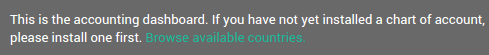

Overview
Odoo's online Point of Sale application is based on a simple, user friendly interface. The Point of Sale application can be used online or offline on iPads, Android tablets or laptops.
Odoo Point of Sale is fully integrated with the Inventory and the Accounting applications. Any transaction with your point of sale will automatically be registered in your inventory management and accounting and, even in your CRM as the customer can be identified from the app.
You will be able to run real time statistics and consolidations across all your shops without the hassle of integrating several external applications.
Configuration
Install the Point of Sale Application
Start by installing the Point of Sale application. Go to and install the Point of Sale application.
Do not forget to install an accounting chart of account. If it is not done, go to the Invoicing/Accounting application and click on Browse available countries:
Then choose the one you want to install.
When it is done, you are all set to use the point of sale.
Adding Products
To add products from the point of sale Dashboard go to and click on Create.
The first example will be oranges with a price of 3€/kg. In the Sales
tab, you can see the point of sale configuration. There, you can set a
product category, specify that the product has to be weighted or not and
ensure that it will be available in the point of sale.
In same the way, you can add lemons, pumpkins, red onions, bananas... in the database.
Tip
How to easily manage categories?
If you already have a database with your products, you can easily set a Point of Sale Category by using the Kanban view and by grouping the products by Point of Sale Category.

Configuring a payment method
To configure a new payment method go to and click on Create.

After you set up a name and the type of payment method, you can go to the point of sale tab and ensure that this payment method has been activated for the point of sale.
Configuring your points of sales
Go to ,
click on the main point of sale. Edit the point of sale
and add your custom payment method into the available payment methods.

You can configure each point of sale according to your hardware, location,...
Now you are ready to make your first steps with your point of sale.
First Steps in the Point of Sale
Your first order
On the dashboard, you can see your points of sales, click on New session:

You will get the main point of sale interface:

On the right you can see the products list with the categories on the top. If you click on a product, it will be added in the cart. You can directly set the correct quantity or weight by typing it on the keyboard.
Payment
Once the order is completed, click on Payment. You can choose the
customer payment method. In this example, the customer owes you 10.84 €
and pays with a 20 € note. When it's done, click on Validate.

Your ticket is printed and you are now ready to make your second order.
Closing a session
At the end of the day, to close the session, click on the Close button on the top right. Click again on the close button of the point of sale. On this page, you will see a summary of the transactions

If you click on a payment method line, the journal of this method appears containing all the transactions performed.

Now, you only have to validate and close the session.